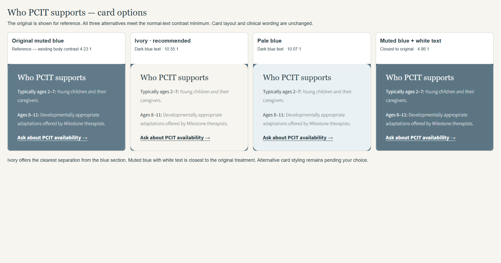

1. Ivory · recommended
Warm ivory surface with dark blue text. Strongest visual separation. 10.55:1 text contrast.
Milestone Mental Health · Phase 1 design review
Ivory with dark blue text is selected and applied. The screenshot comparison preserves the original review options. The controls below let you revisit the alternatives without changing the site.
I recommend ivory with dark blue text. It creates the clearest separation from the surrounding blue and repeats the site's warm ivory palette. If you prefer the original muted look, the third option stays close to it while meeting the text contrast requirement.

Loading ivory preview…
All three alternatives meet the 4.5:1 normal-text contrast minimum for these tested color pairs. This review does not certify whole-site WCAG conformance. The card wording, layout and surrounding section blue are unchanged.